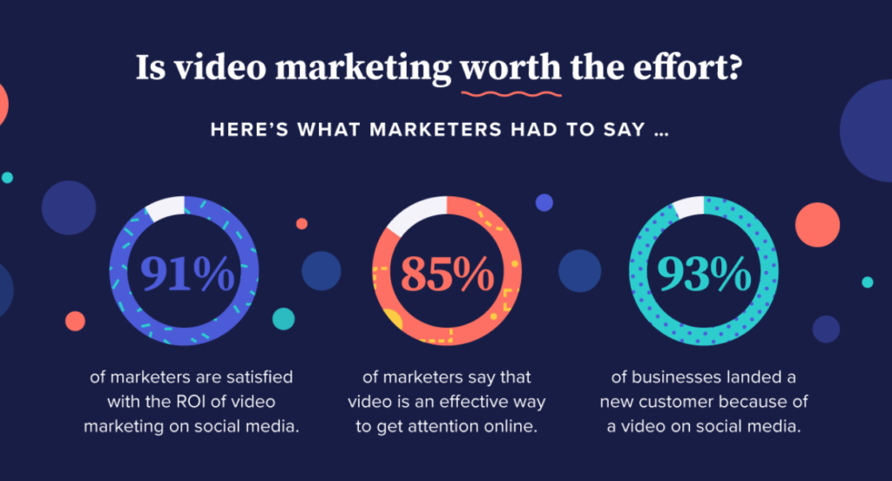

SEO in 2020
Let's start with the basics.
Let's explain what SEO is first and foremost before dwelling deeper into what's to come to the field in
the coming year.
So, SEO stands for 'Search Engine Optimization', while someone unfamiliar with the
field might think that we are optimizing the search engine, that assumption is actually, incorrect.
Unless you are working for Google or Bing webmasters, then you might get to see the action from the other side.
What we do, is optimize our websites. Or our clients sites, in order to fight up for the number one position
on Googles SERP(Search Engine Results Page). This is my definition of it. A very simple one.
Now, there's
actually a ton of work that goes into this process. And it can take anywhere from 3 to 6 months for the
first, results really, to appear. This includes working everyday, depending on the niche that the website
is focused on, what you do as an SEO Expert, is you conduct research, analysis, tests and you track what
other competitors are doing.
The strategy is to outwit the competition, by sifting thoroughly
through a lot of data and making smart decisions based on that data, maybe a little bit of luck and you
can get the number one spot on the SERP. Now, don't get any ideas about trying to use dirty tactics.
There's no such thing in practical SEO.
Google is always keeping an eye, on every website and page it
crawls, it's algorithms are so advanced that virtually there's very little human intervention, basically
the web is run and policed by bots. For good or bad, "Google is the God of the Internets".
They can detect any foul play and your site will get penalized and loose rank, therefore, you loose
your user or customer base. Depending on if you are selling something on your site or just providing
content. It's not all that bad though, Google has a webmasters blog, where you can go and inform yourself
or just read the latest news about what's changed from an SEO perspective.
What makes up SEO?
This is a really good question for a newcomer to the field to ask. Generally, when you ask some SEO
expert or someone who has been in the field for a couple of years, they will probably say something like
SEO can be divided into two main parts, and they are as follows. Technical SEO and Local SEO.
Now, if we take a closer look at Technical SEO, it's actually comprised of two sub parts. On-page SEO
and Off-page SEO.
- On-page SEO
Working on this part, means that your main focus in your SEO strategy is the Website or Web page. That is, you will work strictly on improving the page. You preform your initial SEO analysis, you write down any issues you come upon, you research what and how things can be improved, you test, do another analysis and if you are satisfied with the results, you implement your practices.
- Off-page SEO
This on the other hand, means as the name suggests, you work outside of the site or page in order to increase the visibility of the site. With that, you increase traffic and improve the rank and domain authority. In both parts, you have your target keywords that you want to rank for, and you work your way into getting a higher rank for those target keywords. In one part, you do that from the site or page, in the other you do that from outside the page.
Voice Search
With the boom of the smartphone, a lot of things changed. All of a sudden, you have the entire knowledge
that mankind has gathered over so many centuries, in the palm of your hand. This lead to an age of innovation
and ideas of how to make it easier to access that knowledge in new and exciting ways. After the announcement
of Apple's Siri, the voice assistant, people suddenly had a reason to talk to their phones, whether that was
to set a reminder to turn off your oven or you wanted to search the Web for some kind of information, or even
call a friend, it is always fun to talk to a machine and it talking back to you. This turned smartphones into
a whole new level of interactive piece of tech. After Siri, a lot of other companies started developing their
own Voice Search Assistant most notably, Google and Samsung. But in 2020, no matter what brand of smartphone
you have, it will have a Virtual Assistant. While it wasn't really a big thing in the SEO department in 2018,
that has changed in 2019. We saw a big boom in Smart Speakers with Amazons Echo Dot, Google Home and others.
People can now look up any information and even give commands while sitting on their couch and watching Netflix
without having to touch their phones or computers and having to type something.
Voice Search in 2020 is going to revolutionize how people search and obtain information.
This are the stats of Voice Search for 2019, from DBS Interactive:
- eMarketer predicts that over a third of the US population (111.8 million people) will use a voice assistant monthly in 2019, up 9.5% from 2018.
- ComScore predicts that by the year 2020, 50% of all online searches will be performed with voice search.
- A Gartner study predicts that 30% of all browsing sessions will include voice search by 2020.
- According to NRP and Edison Research, 1 in 6 Americans owned a smart speaker in 2018.
- 1 of every 4 American homes equipped with Wi-Fi owned a smart speaker in 2018, according to Nielsen
- According to Google, 52% of smart speaker owners keep them in a common room such as a living room. 25% of these people keep them in their bedroom, while 22% keep a smart speaker assistant in their kitchen.
- A 2018 study from BrightLocal found that 58% of consumers used voice search to find a local business in 2017, and 46% of people using voice search daily are searching for local business.
- According to an Adobe Analytics survey, the most common voice searches on smart speakers are asking for music (70%) and the weather forecast (64%), followed by fun questions (53%), online search (47%), news (46%), and asking directions (34%).
And for 2020, things are going to get even more interesting. Imagine, you get off work, jump in your Tesla and tell it to take you home. You sit back and enjoy the ride, keeping an eye on everything. You arrive home, get out of your car, unlock the door to your house and you say: Hey Google(or Alexa), I'm home. It turns on the lights, the TV while you go take a shower and change your clothes. You sit down on your couch and, again, you say: Hey Google, what kind of restaurants are nearest to me, and it tells you. You make your choice, tell it what you want to have for dinner and it relays that information to the restaurant thanks to Google Order Food... This is what 2020 and beyond is going to be like.
- By 2020, 50% of all searches across the internet will be voice-based.
- By 2020, 30% of all searches will be done using a device without a screen.
So, you might ask yourself, how do I prepare for this? Well the answer is: You focus on semantics rather than keywords in 2020. You'll find more discussed below, in User Content.
Video
Video? What does video have to do with SEO, some might say... Well, let me elaborate. People love video,
there's an ever growing number of people who prefer watching a video to obtain some information instead of
having to read that information themselves. You've probably noticed that a lot of websites outside of YouTube
are adding or embedding videos into their sites in order to keep their target audience entertained but, most
importantly, to keep their audinece to hang on their site for longer time while still getting the information
they requested. You should keep an eye and if possible, if you have the means to create visually pleasing
and content rich videos, definetly include them on your site.

Visual Search
While this might not be familiar to a lot of people, it's been developing for almost as long as the virtual
assistants. If you have an android smartphone, you might have used it already. Google calls it Google Lens
(mind blowing, I know), Samsung has it integrated into the camera by using their virtual assistant, it's called
Bixby Vision.
Basically, what this does is, you point your mobile device to some product that grabs your interest and
using the camera and AI, it first detects what you are looking at, then gives you results that you can
look up on the web and either find out more about the product or order it from an online store.
I find this very interesting and will keep following the trend development and its impact on the SEO world.
User Content
If you were familiar with SEO before visiting this site, then you know that User Content has been all the
rage in SEO for probably a couple of years now. With the recent completion of the BERT algorithm release,
Google is focused on user friendly content more than ever before. And you should be too.
What is BERT?
"Bidirectional Encoder Representations from Transformers, or as we call it--BERT, for short.
This technology enables anyone to train their own state-of-the-art question answering system."
- from Google.
With this algorithm update, Google is pushing website creators to focus more on genuine user content
instead of just adding keywords. This algorithm will scan the site content and thanks to the AI
behind it, it will make a decision if the content on your site is written in such a manner that
the average user can read and understand. The content on your site should feel natural and flow
easily. And as in the past, this will probably not be the only algorithm update that focuses more
on the content that the page provides. I expect we might see more such updates in the future.
Either improving upon BERT or entirely different algorithm updates. SEO is ever changing.
"By applying BERT models to both ranking and featured snippets in Search, we’re
able to do a much better job helping you find useful information. In fact, when it comes to ranking
results, BERT will help Search better understand one in 10 searches in the U.S. in English, and we’ll
bring this to more languages and locales over time.
Particularly for longer, more conversational queries, or searches where prepositions like “for” and “to”
matter a lot to the meaning, Search will be able to understand the context of the words in your query.
You can search in a way that feels natural for you.
To launch these improvements, we did a lot of testing to ensure that the changes actually are more helpful.
Here are some of the examples that showed up our evaluation process that demonstrate BERT’s ability to
understand the intent behind your search.
Here’s a search for “2019 Brazil traveler to USA need a visa.” The word “to” and its relationship to the
other words in the query are particularly important to understanding the meaning. It’s about a Brazilian
traveling to the U.S., and not the other way around. Previously, our algorithms wouldn't understand the
importance of this connection, and we returned results about U.S. citizens traveling to Brazil. With BERT,
Search is able to grasp this nuance and know that the very common word “to” actually matters a lot here,
and we can provide a much more relevant result for this query."
Artificial Intelligence and SEO
Like the BERT algorithm, Google, BING, and other search engines will continue to rely more on
Artificial Intelligence in order to provide better results for search queries. It comes as no surprise,
because AI is getting better, faster, more reliable and training AI to become good at certain
tasks is becoming easier each year and will surely continue to do so at unprecedented speeds.
AI and Machine Learning are basically what keeps search engines running under the hood.
Besides the search engines, big companies are using AI and Machine Learning to sort through
data that they gather from customers and they sift through data in order to target customers
with a more tailored content or product. There are lots of possibilities, you should definitely
be keeping an eye on the development of SEO strategies and tools that implement AI and Machine Learning.